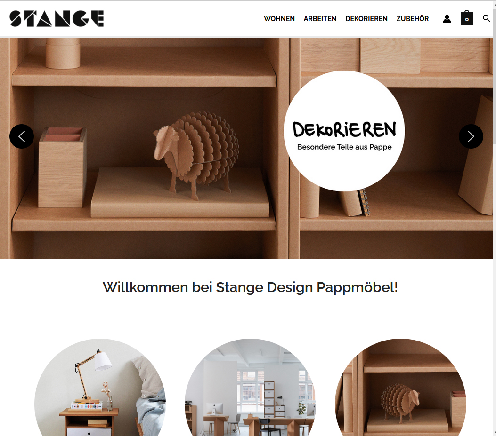
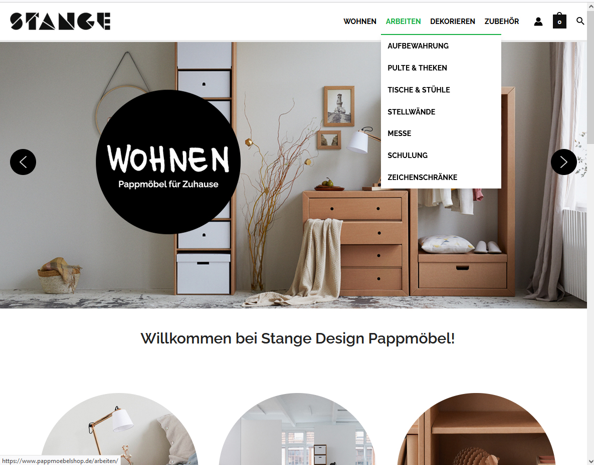
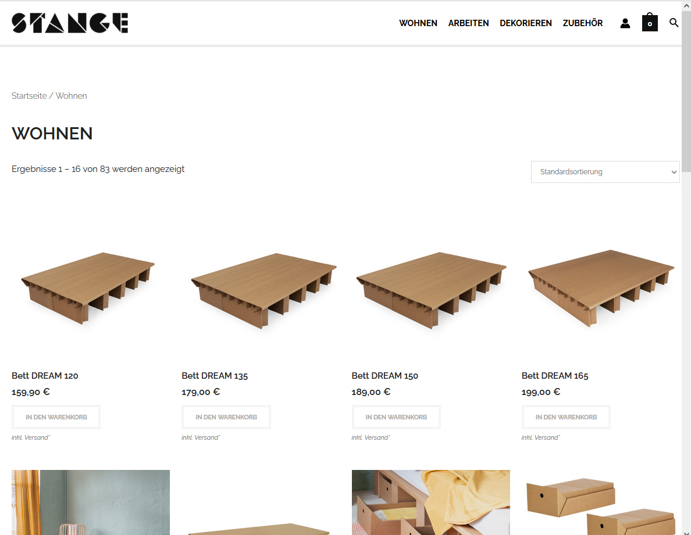
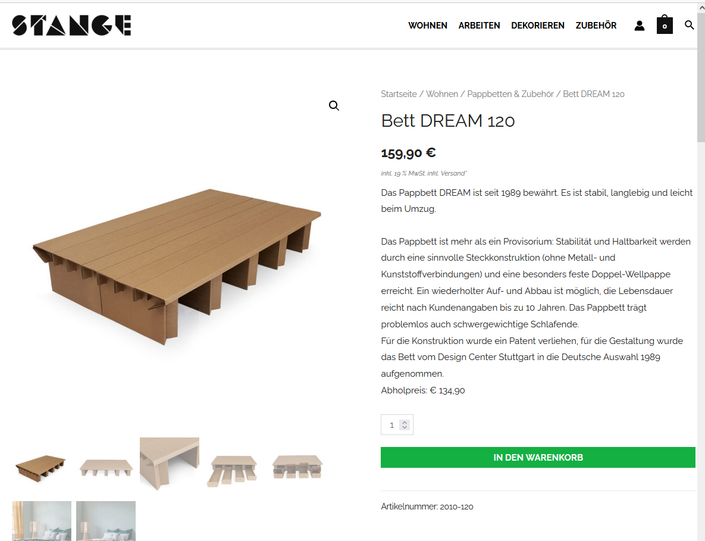
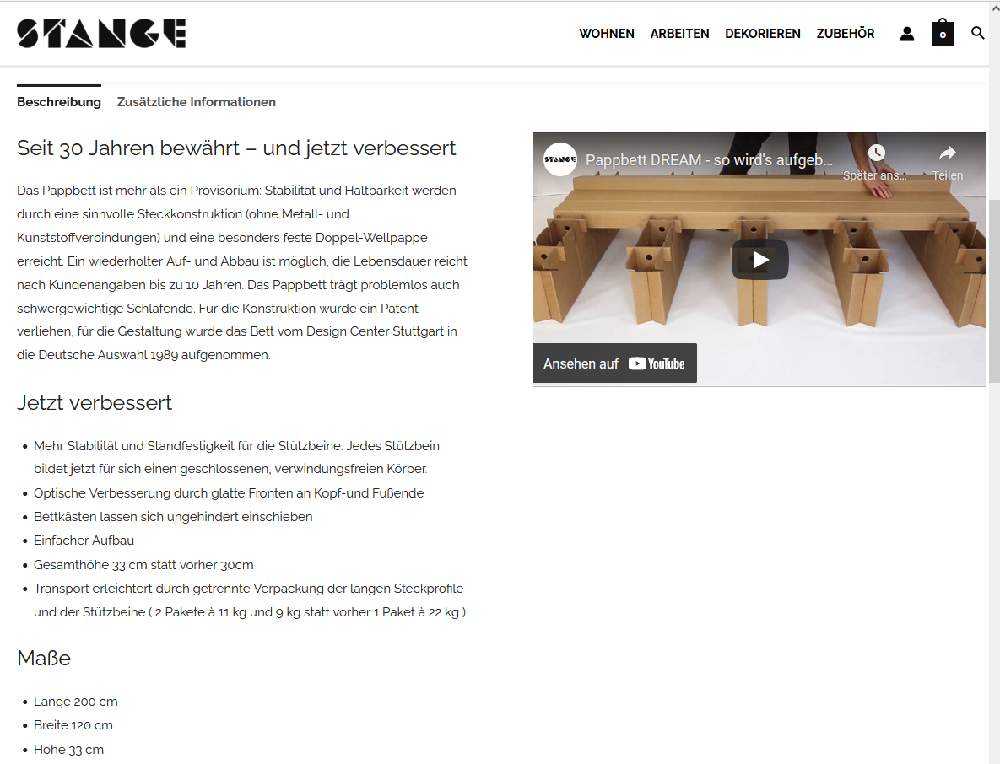
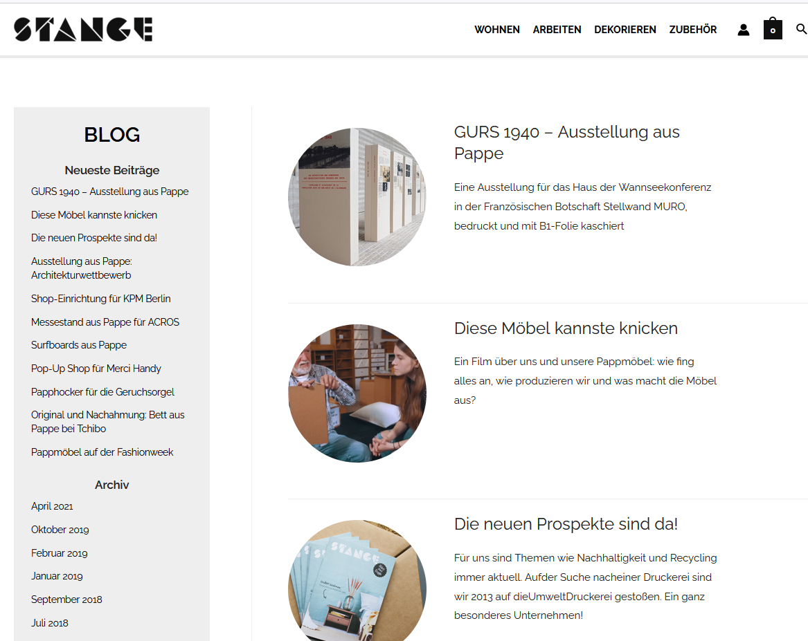
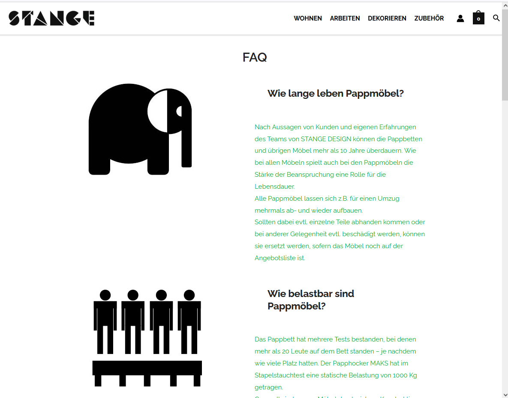
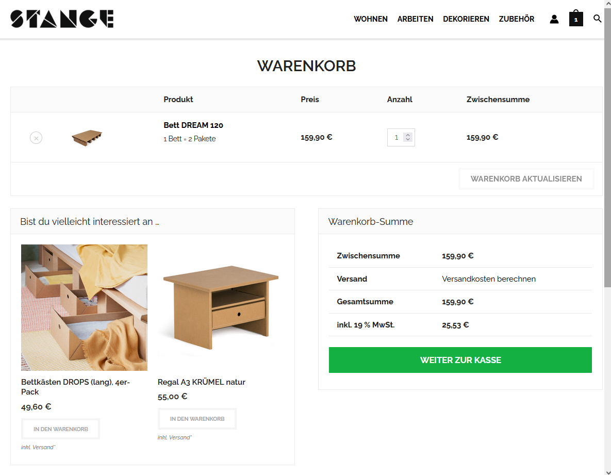
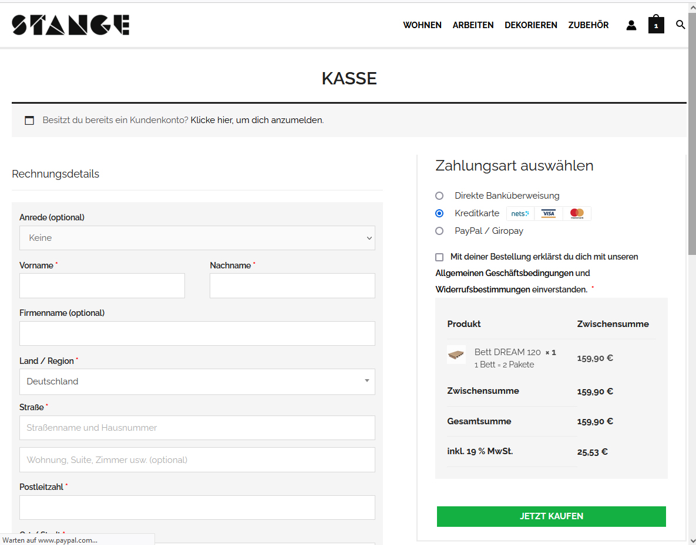

Onlineshop:
Woocommerce & Childtheme
Case Study
Über das Projekt
Bei diesem Projekt handelt es sich um einen Online-Shop für Pappmöbel.
Die Umsetzung umfasste die Installation von WordPress, die Einrichtung der SQL-Datenbank
sowie clientseitige Anpassungen durch die Erstellung eines Child-Themes und die Verwendung von reinem CSS.

Startseite von pappmoebelshop.de
Ziel
Ziel des Projekts war es, einen bestehenden, auf Magento 1 basierenden Webshop neu zu gestalten und Magento durch WordPress und WooCommerce zu ersetzen.

Startseite mit hover menu
Kontext
Der Online-Shop stand in den letzten zehn Jahren im Mittelpunkt meiner Arbeit.
Ich betreute ihn als Shop-Manager, konnte jedoch im Magento-CMS nur wenige Anpassungen selbst vornehmen.
Die Arbeit mit WordPress war unkompliziert, und das System bot alle spezifischen Funktionen, die wir benötigten.

Produktübersicht
Lösungsansatz
- Verwendung eines Systems, das einfach zu bedienen ist und kleine Änderungen problemlos zulässt
- einfache Integration eines Zahlungsmoduls
- gute Lösung für unsere spezifischen Versandoptionen

Produktseite
1. Schritt: WordPress installieren & SQL-Datenbank vorbereiten
- WordPress auf dem Server installieren
- Datenbank-Präfix aus Sicherheitsgründen geändert
2. Schritt: Design anpassen
- Child-Theme erstellen, functions.php ändern

Produktseite mit zweispaltigem Raster und Video

Blog Archiv

FAQ Seite

Warenkorb-Seite

Checkout Seite
Reflektion
Es war eine Herausforderung, die Verantwortung für die Sicherheit des Geschäfts zu übernehmen und Abwicklung der Zahlungslösung.
Zeitlicher Umfang
Bevor ich den Live-Shop startete, erstellte ich mehrere Test-Shops und testete dabei auch die Migration. Vom ersten Test bis zum fertigen Live-Shop verging etwa ein Jahr, eingebettet in meinen Arbeitsalltag.